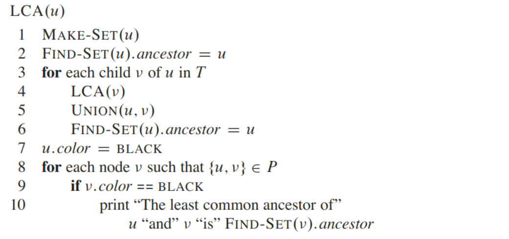

问题求解（二） Open Topic IV 笔记
选题为 15-1, 讲解 Tarjan 离线 LCA 算法及其的线性改进.
演示文稿: 详见 Slide.
常见 LCA 算法一览
| 算法 | 在/离线 | 时间复杂度 | 空间复杂度 |
|---|---|---|---|
| 倍增法 | 在线 | \(O(n\log n)\sim O(\log n)\) | \(O(n\log n)\) |
| 树链剖分法 | 在线 | \(O(n)\sim O(\log n)\) | \(O(n)\) |
| Link Cut Tree 法 | 在线 | \(O(n\log n)\sim O(\log n)\) | \(O(n)\) |
| RMQ, ST 表 | 在线 | \(O(n\log n)\sim O(1)\) | \(O(n\log n)\) |
| Tarjan LCA | 离线 | \(O(n+q\alpha(q+n, n))\) | \(O(n+q)\) |
| Tarjan LCA(改进) | 离线 | \(O(n+q)\) | \(O(n+q)\) |
| 标准 RMQ | 在线 | \(O(n)\sim O(1)\) | \(O(n)\) |
其中定义树的节点个数为 \(n\). 在线算法的时间复杂度中, 符号 \(O(T_1)\sim O(T_2)\) 意为, 预处理需要时间 \(O(T_1)\), 单次在线询问需要时间 \(O(T_2)\). 离线算法中 \(q\) 为总询问个数. 以上复杂度分析均在 RAM 模型下进行.
另外, \(\alpha(m, n)=\min\lbrace i\ge 1: A_i(\lfloor m/n \rfloor) \ge \log n\rbrace\), 它关于 \(m\) 递减, 关于 \(n\) 递增.
本文主要介绍 Tarjan 离线 LCA 算法及其改进算法.
Tarjan 离线 LCA 算法
算法流程

算法解释

算法的简要证明
注意到几个事实:
- 如果 \(u\) 为白色而 \(v\) 为黑色, 那么所有以 \(v\) 的祖先到 LCA(\(u, v\))(不含 LCA)为根的子树都已经合并成了一个连通块(因为它们所在的递归已经完整退出).
- LCA(\(u, v\)) 还在执行中(因为 \(v\) 是 LCA(\(u, v\)) 的子孙), 故它尚未与它的父亲合并. 由于算法的执行过程保证该连通块的代表元(或者说代码中的 ancestor) 是深度最小的节点, 也就是 LCA.
算法时空分析
空间复杂度显然为 \(O(n+q)\), 时间复杂度分析如下:
一、上界分析
在每一次的递归过程中, 除去处理询问的部分, 其余部分均花费常数时间. 故累计 \(n\) 次递归的时间为 \(O(n)\); 每次处理询问需调用一次 Find-Set, 单次时间均摊为 \(O(\alpha(q+n, n))\). 故总时间为 \(O(n+q\alpha(q+n, n))\).
二、下界分析
Tarjan 的一篇论文1给出了并查集在最坏情况下的下界是 \(\Omega(n+q\alpha(q+n, n))\). 该下界证明容易拓展到 Tarjan 离线 LCA 算法.
故综上, 该算法时间为 \(O(n+q\alpha(q+n, n))\) 并达到理论最优, 空间为 \(O(n+q)\).
一种改进到线性的做法
由 Gabow 和 Tarjan 提出2. 他们提出了一种并查集方法: 当并查集的 Union 过程事先已知(不要求顺序已知, 只要求操作已知)时, 可以将 \(n\) 个点、\(q\) 次在线 Find-Set 和 Union 的并查集的复杂度改进成线性 \(O(n+q)\).
算法描述
由于 Union 关系确定, 可以把需要执行 Union(\(u, v\)) 的元素之间建边, 则可以形成一棵"合并树"(如果 Union(\(u, v\)) 操作少于 \(n-1\) 次, 得到的是一个森林, 但不影响我们的讨论). 容易发现, 当我们在讨论 Tarjan 离线 LCA 时, 原树就是合并树. 在合并树上我们的并查集只要求完成两种操作:
- Union-Tree(\(u\)): 把 \(u\) 和 \(u.p\) 合并到同一个连通块中, 且把原来 \(u.p\) 所在连通块的代表元设置为新连通块的代表元. 每个结点仅可以执行一次, 且不可对根执行.
- Find-Tree(\(u\)): 查找 \(u\) 所在连通块的代表元.
这个算法的主要思想是进行树分块, 在块的根之间使用带 \(\alpha\) 复杂度的并查集进行维护, 在块内部使用查表得到结果. 利用这种并查集, 可以将 Tarjan 离线 LCA 的理论时间复杂度优化到 \(O(n+q)\).

每一个块的大小要求小于 \(b\), 是一个森林, 森林中的每一棵树都是原树中的一个连通块, 并且它们深度最低的节点有着公共的父亲, 称作这个块的根. 注意根不在该块中.
如果一个结点 \(u\) 已经执行过 Union-Tree(\(u\))了, 称它是被标记的. 显然被标记的结点无法成为代表元. 那么, 在 Find-Tree(\(u\)) 中, 要寻找的是离 \(u\) 最近的未被标记的祖先. 这个祖先可能和 \(u\) 在同一个块中, 也可能和 \(u\) 不在同一个块中. 我们分情况如下:
在块内进行查询
使用 Find-In-Block(\(u\)) 查询在块内的 \(u\) 的最近未被标记的祖先. 如果没有(即在别的块中), 那么返回块的根. 由于每一块的大小至多为 \(b\), 故不同的块的形状至多为 \(b^{b-1}\) (枚举每一个元素的父亲. 实际上远远小于它, 因为很多情况不能构成合法的森林). 如果用一个二进制数存储, 需要 \(2^{(b-1)\lceil \log b\rceil}\) 位存储. 假设 RAM 的字长 \(w=O(\log n)\), 那么取适当的 \(b=O(\log n/\log \log n)\) 可以使得 \((b-1)\lceil \log b\rceil\le w\). 那么可以用一个整数存储某个块的父亲状态. 除此以外, 如果得知了每个点是否被标记(有至多 \(2^{b-1}\) 个状态数), 要求的 Find-In-Block 是哪个点 \(u\), 那么可以用一个表 table\([0\cdots 2^{(b-1)\lceil \log b\rceil}-1, 0\cdots 2^{b-1}-1, 1\cdots b-1]\) 事先预处理相应块的答案(注意这个表的三维都可以用整数压缩), 从而在 \(O(1)\) 时间内完成 FInd-In-Block(\(u\)) 操作. 至于空间, 该表的空间需求是 \[ 2^{(b-1)\lceil \log b\rceil}\cdot 2^{b-1}\cdot (b-1). \] 当 \(b=O(\log n/\log \log n)\) 时, 上式是 \(O(n)\) 的. Gabow 和 Tarjan 在文中给出了在时间 \(O(n)\) 内构建该表的算法.
在块间进行查询
当在块内进行查询后返回的结点不在块内(即是它的根)时, 说明在块内找不到 \(u\) 未被标记的祖先, 需要进行块间查询. 在每个块的根之间建立传统的 \(\alpha\) 并查集, 那么并查集中有 \(O(n/b)\) 个结点.
我们把块间查询算法叫 Find-Across-Block(\(x\)), 其中 \(x\) 是 \(u\) 所在块的根. 方法如下:
- 执行 \(x\gets \alpha\)-Find(\(x\)).
- 执行 \(y=\) Find-In-Block(\(x\)). 如果得到的 \(y\) 和 \(x\) 在同一个块, 则返回; 否则, 执行 \(\alpha\)-Union(\(y, x\)), 并让 \(x\gets \alpha-\)Find(\(x\)), 重复执行 \(2\).
这里 \(\alpha\) - 并查集的作用是快速排除某段路径: 在已经合并了的块的根之间不会再有没有标记的节点, 从而保证了均摊复杂度.
进行时间复杂度分析, 容易得到复杂度为 \(O((q+O(n/b))\alpha(q+O(n/b), O(n/b))+O(n/b))=O(q+n)\), 当 \(b=\Omega(\log \log n)\) 时.
树上合并操作
是 \(O(1)\) 的, 只需要在块中标记该节点即可.
结论
在分块中取 \(b=\Omega(\log \log n)\) 并 \(b=O(\log n/\log \log n)\), 则可以在 \(O(n+q)\) 时间, \(O(n)\) 空间内解决 RAM 模型上的已知结构的在线并查集合并查询问题. 虽然可能并不实用, 但是具有理论价值.